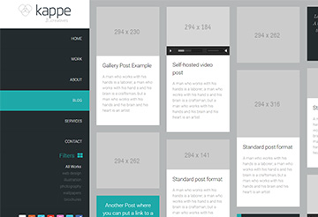
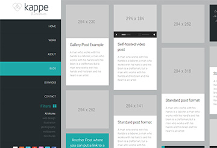
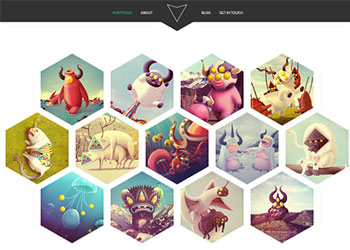

Kappe
Kappe is a creative multipurpose web template. With its grid-based design, you can convert into a personal blog or a business web page with a few clicks of the button.
Design: https://colorlib.com/wp/free-psd-website-templates/

Hexal
Hexal is a unique portfolio template that is guaranteed to leave an impression on anyone visiting your site. It is definitely perfect for web designers, graphic designers, and anyone with a creative mind.
Design: https://colorlib.com/wp/free-psd-website-templates/